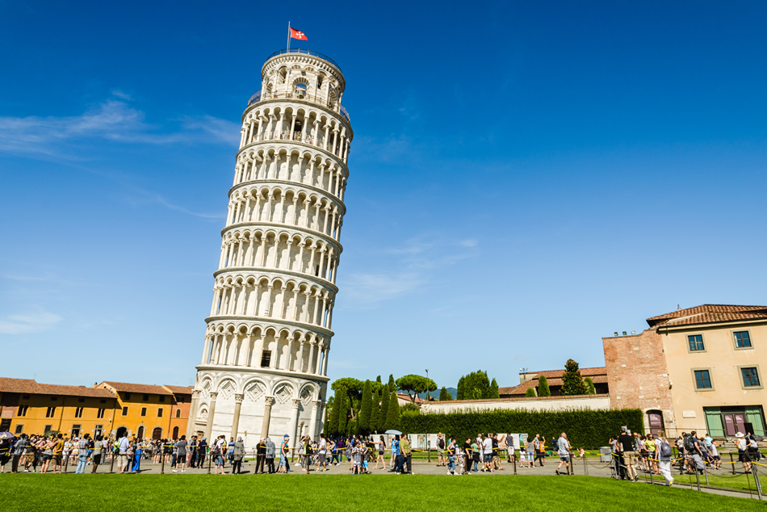

Isaac Newton
Es común ver como caen los cuerpos cuando ellos son liberados, el sube y baja de una moneda lanzada al aire, la elegancia de los chorros de agua de una pileta, la pelota de vóley, etc. Todos estos movimientos tienen algo en común: los cuerpos se ven obligados a bajar. En este capítulo vamos a estudiar las ecuaciones que gobiernan la caída de los cuerpos en forma vertical y con respecto a la tierra, despreciando para ello todo tipo de resistencia y fuerza
Los grandes filósofos griegos, y en particular
Aristóteles, describieron el movimiento de caída
haciendo las siguientes consideraciones:
1. La causa por la cual caen los cuerpos es su propio
peso.
2. Los cuerpos de mayor peso son atraídos más intensamente por la Tierra.
3. Los cuerpos pesados caen más rápido que los
cuerpos livianos.
Este modo de ver las cosas prevalecieron como
verdades absolutas por cerca de 2000 años hasta la
aparición de Galileo
Galileo es considerado como el creador del método experimental en física, estableciendo que cualquier afirmación relacionada con algún fenómeno debía estar fundamentada en experimentos y en observaciones cuidadosas. Este método de los fenómenos de la naturaleza no se había adoptado hasta entonces, por lo cual varias conclusiones de Galileo se oponían al pensamiento de Aristóteles. Al estudiar la caída vertical de los cuerpos mediante experimentos y mediciones precisas, Galileo llegó a la siguiente conclusión: «Si se dejan caer simultáneamente desde una misma altura un cuerpo ligero y otro pesado, ambos caerán con la misma aceleración, llegando al suelo en el mismo instante».
 Cuentan que Galileo subió
a lo alto de la torre de Pisa
(en Italia), y para demostrar
en forma experimental sus
afirmaciones, dejó caer varias
esferas de distinto peso,
las cuales llegaron al suelo
simultáneamente. A pesar de
la evidencia proporcionada por
los experimentos realizados por
Galileo, muchos simpatizantes
del pensamiento aristotélico no se dejaron convencer,
siendo el gran físico objeto de persecuciones por
propagar ideas que se consideraron revolucionarias
Cuentan que Galileo subió
a lo alto de la torre de Pisa
(en Italia), y para demostrar
en forma experimental sus
afirmaciones, dejó caer varias
esferas de distinto peso,
las cuales llegaron al suelo
simultáneamente. A pesar de
la evidencia proporcionada por
los experimentos realizados por
Galileo, muchos simpatizantes
del pensamiento aristotélico no se dejaron convencer,
siendo el gran físico objeto de persecuciones por
propagar ideas que se consideraron revolucionarias
Galileo es considerado como el creador del método experimental en física, estableciendo que cualquier afirmación relacionada con algún fenómeno debía estar fundamentada en experimentos y en observaciones cuidadosas. Este método de los fenómenos de la naturaleza no se había adoptado hasta entonces, por lo cual varias conclusiones de Galileo se oponían al pensamiento de Aristóteles. Al estudiar la caída vertical de los cuerpos mediante experimentos y mediciones precisas, Galileo llegó a la siguiente conclusión: «Si se dejan caer simultáneamente desde una misma altura un cuerpo ligero y otro pesado, ambos caerán con la misma aceleración, llegando al suelo en el mismo instante».
Como ya debes haber visto muchas veces, cuando se dejan caer una piedra y una pluma al mismo tiempo, la piedra cae primero, como lo señalaba Aristóteles, pero es posible demostrar que esto sucede porque el aire produce un efecto retardante en la caída de cualquier objeto, y que dicho efecto ejerce una mayor influencia sobre el movimiento de la pluma que sobre el de la piedra. En realidad, si dejamos caer la piedra y la pluma dentro de un tubo del cual se extrajo el aire (se hizo el vacío), comprobaremos que ambos objetos caen en forma simultánea, como afirmó Galilelo.
Por lo tanto, la afirmación de Galileo solo es válida para los cuerpos que caen en el vacío. El movimiento de caída de los cuerpos en el vacío o en el aire, cuando se desprecia la resistencia de este último, se denomina caída libre.
Galileo logró comprobar que el movimiento de caída libre es uniformemente acelerado (aceleración constante); tal aceleración, que recibe el nombre de aceleración de la gravedad, suele representarse por g. Experimentalmente, se obtiene que el valor de g resulta ser aproximadamente g = 9,8 m/s2 , pero nosotros tomaremos el valor de 10 m/s2 . Es decir, cuando soltamos un cuerpo desde cierta altura, su rapidez aumenta en 10 m/s en cada segundo; mientras que si lanzamos al cuerpo hacia arriba su rapidez disminuirá 10 m/s en cada segundo.
Donde se considera: Y (+): cuando baja Y (–): cuando sube
Donde las magnitudes y sus respectivas unidades en el SI son: Vo: velocidad inicial (m/s). Vf : velocidad final (m/s). t: intervalo de tiempo (s). g : aceleración de la gravedad (m/s2 ). h: longitud de la altura que asciende o desciende en un intervalo de tiempo (m)
Isaac Newton

Albert Einsten

Nicola Tesla